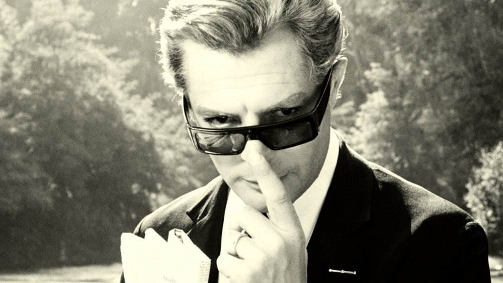

8½, Still (Marcello Mastroianni as Guido Anselmi)
Federico Fellini · 1963 · Film still, black and white
In copyright. Look and learn: shown for study, not for download.
In April 1962, with sets built and Marcello Mastroianni cast, Federico Fellini began a letter to his producer saying he had lost his film and must abandon it. Called to the set to toast the start of production, he decided to make a film about a director who no longer knows what film he wants to make. Shooting began on 9 May 1962 and ended on 14 October. The sound was all dubbed afterwards; many lines were written in post-production while actors on set mouthed random words. It was his last black-and-white film.